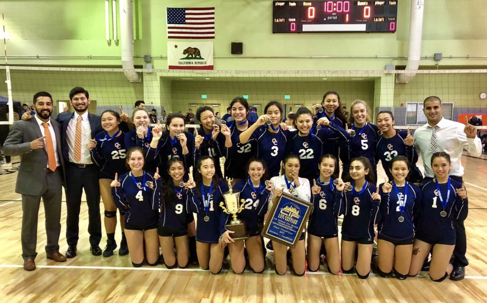

Mitra Pirzay
Dedicated and passionate about psychology and a strong drive to pursue a career in medicine. Exhibits a deep curiosity and empathy towards understanding the human mind and behavior. Recognized the profound impact that psychological factors have on individuals' well-being and became increasingly interested in exploring the underlying causes of human behavior, including the cognitive, emotional, social, and biological processes that shape thoughts and actions. Aspires to acquire the necessary knowledge and skills to help individuals navigate life's challenges and promote mental well-being. Views psychology as a valuable foundation for a career in medicine as understanding the psychological aspects of health and illness is crucial for providing holistic patient care. Academic journey in psychology is driven by a strong commitment to personal growth, a thirst for knowledge, and a profound desire to make a positive impact on the lives of individuals and society as a whole.
Born in Los Angeles, CA and attended Chatsworth High School. Demonstrated exceptional academic abilities and actively participated in various extracurricular activities including Interact Club. Member of Chatsworth High School's volleyball team showcased natural leadership abilities, motivating and inspiring teammates to perform at their absolute best. Unwavering determination and infectious enthusiasm fueled the team's success, leading them to unprecedented victories and division one champions. The remarkable four-year journey as a volleyball teammate exemplified the values of sportsmanship, perseverance, and unwavering dedication. In 2019, graduated from Chatsworth High School, equipped with a solid educational foundation and a determination to make a difference in people's lives. Academic achievements and strong interest in understanding the human mind led to pursuing a Bachelor's degree in psychology at the prestigious University of California, Riverside (UCR).
At the University of California, Riverside, has continued to excel academically, consistently demonstrating intellectual rigor and a genuine passion for the field of psychology. Coursework has provided with a comprehensive understanding of various psychological theories, research methods, and practical applications. Actively engages in class discussions, demonstrating critical thinking skills and the ability to analyze complex issues from multiple perspectives. Recognized the importance of gaining practical experience in the field and has sought opportunities to enhance knowledge and skills outside of the classroom. Engaged in research projects, collaborating with esteemed faculty members and contributing to ongoing studies. Research involvement has allowed the development of a deeper understanding of the scientific process and refine problem-solving abilities. In addition to academic pursuits, actively participates in various student organizations and volunteer initiatives on campus as a member of Kappa Kappa Gamma. Driven by a desire to contribute to the well-being of others and make a positive impact on the community with their philanthropy being mental health. Looking towards the future, ambitious goals have been set. Plans to pursue a career in medicine, recognizing that it offers an opportunity to combine the passion for psychology with the desire to provide direct care and support to individuals in need. Ultimate goal is to attend medical school, where I can further hone my knowledge and skills in order to become a compassionate and knowledgeable physician.
Experience
Medical Files
• Worked on medical files for personal injury cases
• Communicated with hospitals, doctors, and clients
• Receptionist for Cohen & Marzban
Billing Clerk
• Responsible for creating and sending invoices
• Sending out payment reminders to customers
Education
UC Riverside
Portfolio
